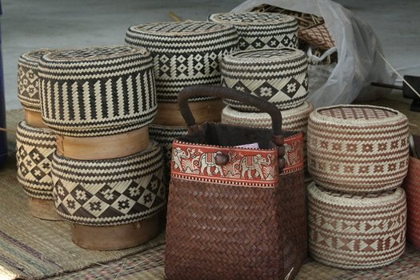
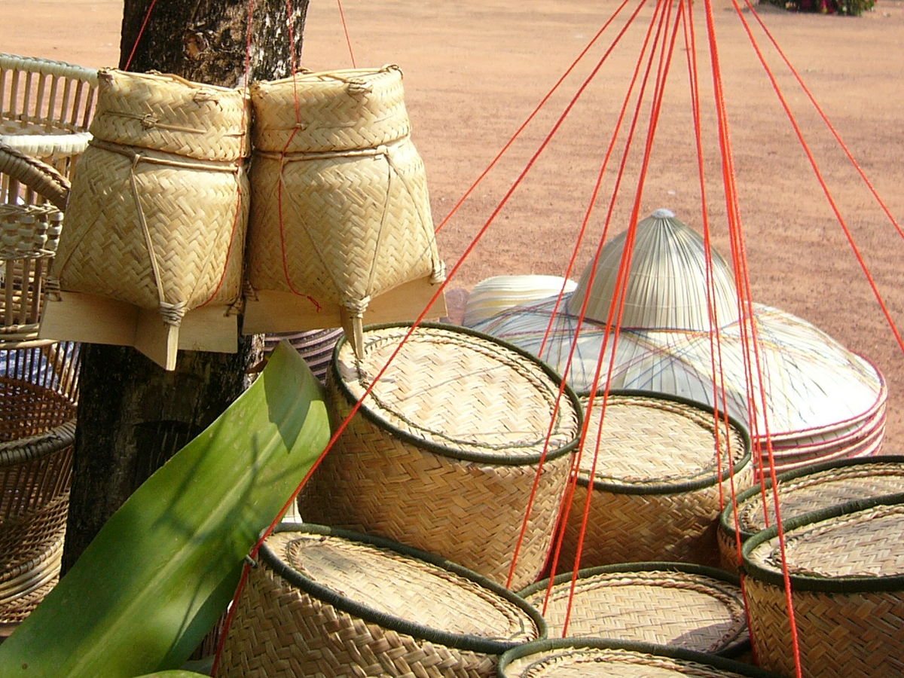
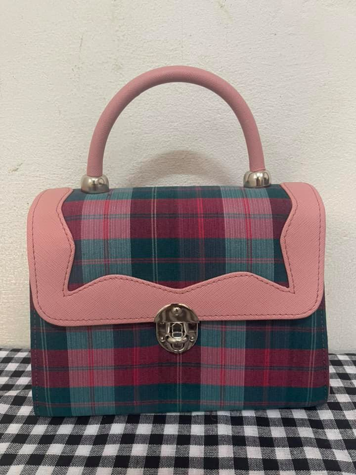
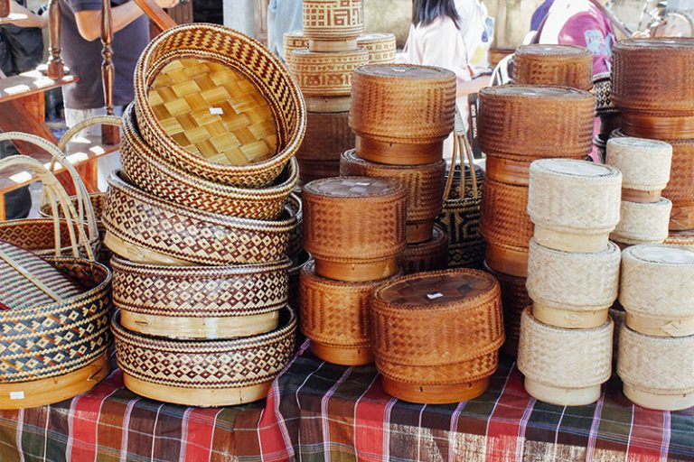

.jpg)



ภาชนะในการเก็บอาหารที่เป็นงานหัตถกรรมอันทรงคุณค่าชนิดหนึ่งที่มากด้วยภูมิปัญญาท้องถิ่น เป็นของที่มีประจำบ้านของชาวไทยทางภาคตะวันออกเฉียงเหนือและภาคเหนือมายาวนาน ใช้สำหรับบรรจุข้าวเหนียวที่นึ่งสุกแล้วหรือใช้เก็บเมล็ดพันธุ์พืช หรือแม้แต่ใช้เป็นเครื่องประดับในครัวเรือนหรือประดับในพิพิธภัณฑ์ประวัติศาสตร์ต่างๆ เป็นเครื่องจักสานที่ทำจากวัสดุธรรมชาติ
เช่น ไม้ไผ่ ใบจาก ใบตาล ใบลาน ต้นคล้า หรือ จากต้นพืชที่มีลักษณะยาวเรียว ภาชนะในการเก็บอาหารที่เป็นงานหัตถกรรมอันทรงคุณค่าชนิดหนึ่งที่มากด้วยภูมิปัญญาท้องถิ่น เป็นของที่มีประจำบ้านของชาวไทยทางภาคตะวันออกเฉียงเหนือและภาคเหนือมายาวนาน ใช้สำหรับบรรจุใช้เก็บ หรือแม้แต่ใช้เป็นเครื่องประดับในครัวเรือนหรือประดับในพิพิธภัณฑ์ประวัติศาสตร์ต่างๆ เป็นเครื่องจักสานที่ทำจากวัสดุธรรมชาติ เช่น ไม้ไผ่ ใบจาก ใบตาล ใบลาน ต้นคล้า หรือ จากต้นพืชที่มีลักษณะยาวเรีย ภาชนะในการเก็บอาหารที่เป็นงานหัตถกรรมอันทรงคุณค่าชนิดหนึ่งที่มากด้วยภูมิปัญญาท้องถิ่น เป็นของที่มีประจำบ้านของชาวไทยทางภาคตะวันออกเฉียงเหนือและภาคเหนือมายาวนาน ใช้สำหรับบรรจุข้าว เหนียวที่นึ่งสุกแล้วหรือใช้เก็บเมล็ดพันธุ์พืช หรือแม้แต่ใช้เป็นเครื่องประดับในครัวเรือนหรือประดับในพิพิธภัณฑ์ประวัติศาสตร์ต่างๆ เป็นเครื่องจักสานที่ทำจากวัสดุธรรมชาติ เช่น ไม้ไผ่ ใบจาก ใบตาล ใบลาน ต้นคล้า หรือ จากต้นพืชที่มีลักษณะยาวเรียวหรือโครงการหนึ่งตำบล หนึ่งผลิตภัณฑ์ ถือเป็นนโยบายที่ก่อกำเนิดขึ้นมา เพื่อกระตุ้นเศรษฐกิจของประเทศไทย โดยได้นำภูมิปัญญาของชาวบ้านแต่ละจังหวัด ที่มีเอกลักษณ์ไม่ซ้ำใครมาแปรรูปเป็นสินค้าที่หลากหลาย อาทิ อาหาร, งานหัตถกรรม, งานจักสาน รวมถึง งานถักทอ ซึ่งนอกจากเป็นการกระตุ้นเศรษฐกิจให้ฟื้นตัวแล้ว ยังมีส่วนช่วยเผยแพร่วัฒนธรรมผ่านสินค้าแบบไทยๆ ออกสู่สายตาชาวโลกอีกด้วย ซึ่ง ณ ปัจจุบัน มีสินค้า OTOP วางจำหน่ายทั้งในไทย และต่างประเทศ ซึ่งถือเป็นการต่อยอดให้ชาวบ้านดึงจุดเด่นสิ่งของในท้องถิ่นตนเองออกมา เพื่อสรรสร้างสินค้าที่ดี และมีคุณภาพ
ไทยรับแนวคิดการดำเนินโครงการ OTOP มาจากประเทศญี่ปุ่น (Oita International Center: OIC) และนำมาปรับใช้กับประเทศไทย โดยภาครัฐเข้าช่วยเหลือในด้านความรู้สมัยใหม่ การต่อยอดภูมิปัญญาท้องถิ่น และการบริหารจัดการเพื่อเชื่อมโยงสินค้าจากชุมชนสู่ตลาดทั้งในประเทศและต่างประเทศด้วยระบบร้านค้าเครือข่ายและอินเตอร์เน็ต พัฒนาผลิตภัณฑ์และบริการที่มีคุณภาพ มีจุดเด่นและมูลค่าเพิ่ม เป็นที่ต้องการของตลาด ทั้งในและต่างประเทศ
กระเป๋าผ้าไหม
กระติบเล็ก
กระติบใหญ่